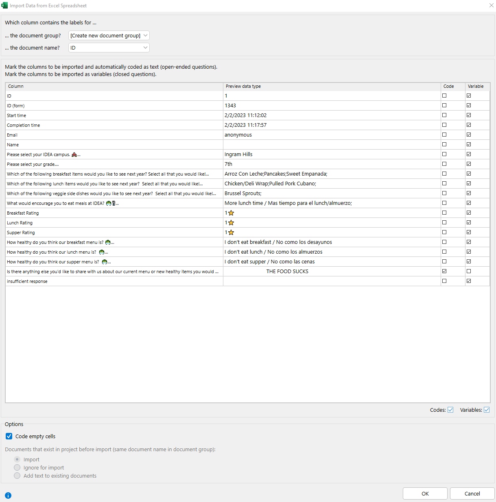

8 Models and Methods
Our research involves a wide variety of methods in statistics and data science to analyze problems and answer questions in educational data. In consultation with our stakeholders, we carefully select the most relevant approach(es) to provide an appropriate and accurate product.
We use methods in descriptive, inferential, and predictive statistics to understand information about our organization. The choice of frequentist vs. Bayesian methods is up to you and should always be justified, but choosing the simplest, appropriate tool should be the starting point for analysis. But, before we start any analysis, the design of the program influences how we establish our methods of research.
8.1 Research design
When our work requires us to assign causation, we must consider how the data were collected before deciding on an appropriate model.
8.1.1 Causal inference
Most of our data is observational, so if we want to describe causal relationships in our data, we must appeal to potential outcomes. Thus, we will briefly cover some of the relevant causal inference concepts and techniques.
When a student is marked for inclusion in, say, a tutorial group, we would like to see how much the tutorial increased their score on a test, compared to a scenario where the student did not attend the tutorial. If the student attends the tutorial, we can measure the outcome of the treatment (the tutorial) by seeing what grade they earned after a test; we cannot observe, however, the outcome of the control (no tutorial). Potential outcomes aims to remedy this.
8.1.1.1 Potential outcomes
Suppose we have both the treatment and control outcomes for each student. We would like to measure \(\delta_i = Y^1_i - Y^0_i\), the difference in the treatment outcome \(Y^1_i\) and control outcome \(Y^0_i\) for student \(i\). Then, our main estimators for the tutorial effect are \(ATE, ATT\) and \(ATU\), which are defined below:
\(ATE = E[\delta_i]\) represents the Average Treatment Effect \(E[\delta_i] = E[Y^1_i - Y^0_i]\). In other words, \(ATE\) answers the question “What is the additional effect of the treatment?”
\(ATT = E[\delta_i \mid \textrm{in treatment group}]\) represents the Average Treatment effect of the Treatment group, \(E[Y^1_i - Y^0_i \mid \textrm{in treatment group}]\). In other words, \(ATT\) answers the question “What is the additional effect of the treatment for those in the treatment group?”
\(ATU = E[\delta_i \mid \textrm{in control group}]\) represents the Average Treatment effect of the Untreated (control) group, \(E[Y^1_i - Y^0_i \mid \textrm{in control group}]\). In other words, \(ATU\) answers the question “What is the additional effect of the treatment for those in the control group?”
\(ATE\) can be decomposed into a weighted average of \(ATT, ATU\), such that \(ATE = p\times ATT + (1-p)\times ATU\), where \(p\) is the weight of the treatment group.
In our scenario,
\(ATE\) represents the expected marginal effect of the tutorial group on test scores for all students,
\(ATT\) represents the expected marginal effect of the tutorial group for students who participate in tutorials, and
\(ATU\) represents the expected marginal effect of the tutorial group for students who do not participate in tutorials.
Estimates may be biased because we do not randomly assign students to tutorials - we select them for each group based on some criteria. Using randomization inference, we can separate assignment bias from the estimates of \(ATT, ATU\) to find appropriate estimates and p-values on \(ATE\).
8.1.1.2 Matching models
We can leverage large samples to find a potential outcome for a student by matching other students who are reasonably similar, using a specified distance measure. Thus, we can reasonably estimate \(ATE\) since we have both the treatment and control outcomes.
By using the matchit package in R, we can specify covariates we would like to match in our data between the treatment and control groups.
#use matchit like a glm
m_out <- matchit(ActiveIL ~ Race + Gender + Grade +
SPED + LEP + EcoDis + GradeEquivalentBOY, #response specifies control/treatment, covariates specify what to match
data = rs_il_mod,
method = "cem", #specify matching method
link = "logit",
estimand = "ATT")
#produces data frame with needed weights
m_data <- match.data(m_out)
#model uses weighted linear model to estimate causal effect of using Imagine Learning
m_att <- lm_robust(GradeEquivalentGrowth ~ ActiveIL,
data = m_data,
weights = m_data$weights)
summary(m_att)8.1.2 Experimental design
Under ideal conditions, we would test the effect of a program by randomized controlled trials – this usually does not happen. However, we can still use the tools of design to structure our data and variance appropriately.
8.1.2.1 Differences among distributions of groups
If we are comparing means from multiple groups, then we first need a procedure to compare all means together. Afterward, we might choose a post-hoc procedure to see which pairs of means are different.
The most common way of comparing multiple means is an ANOVA (analysis of variance). To perform an ANOVA:
- construct a linear model and save the object
lm_my_model <- lm()(see linear modeling below) - compare the variance among the groups using
aov(lm_my_model)
Suppose we want to use SEL survey results to measure emotion regulation (a quantitative variable) across multiple grade levels. To see if the average EmotionRegulationScore differs at all between grade levels, then we can use the following code:
# linear model, where grade level is treated as a factor, not numeric
lm_survey_results <- lm(EmotionRegulationScore ~ as.factor(GradeLevelID),
data = df_sel_survey)
# perform ANOVA
aov(lm_survey_results)Then, if the ANOVA suggests the means are not all the same, then a post-hoc analysis can reveal which groups are different.
- Determine how many tests are being conducted.
- Use a Bonferonni correction (or other appropriate correction) to adjust p-values or \(\alpha\)-level.
- Choose an appropriate post-hoc test:
- Tukey HSD - check all pairs of means to see which pairs are significantly different
- Dunnett - compare all means to a control
- Hsu - check which means are the “best”, either the lowest or highest of the group
8.1.2.2 Differences among levels of variables
Educational data can often be described in a hierarchy:
- Level 1: student
- Level 2: student within a school
- Level 3: student within a school within a region
A mixed model (also, hierarchical or multilevel) allows for both fixed and random effects, so this nesting will give us different variances at each level. This is ideal for modeling an outcome that can vary by school and regional differences - in other words, we can vary the slope and intercept by each school and region.
Case 1: level 1 model
A model where the error term does not account for any grouping, such as modeling the response of student \(i\), would look like:
\(\textrm{EmotionRegulationScore}_i = \beta_0 + \beta_1 \times \textrm{AvgDailyAttendance}_i + \epsilon_i\)
and can be estimated using lm():
lm_survey_results <- lm(EmotionRegulationScore ~ AvgDailyAttendance,
data = df_sel_survey)
summary(lm_survey_results)Case 2: level 2 model
A mixed model where the error term accounts for the grouping of student \(i\) in school \(j\), and the slope and intercept are dependent on each school, would look like
\(\textrm{LifeSatisfactionScore}_{ij} = \beta_{0j} + \beta_{1j} \times \textrm{AvgDailyAttendance}_{ij} + \epsilon_{ij}\)
and can be estimated using lme4::lmer():
# install.packages("lme4")
# library(lme4)
mm_survey_results <- lmer(EmotionRegulationScore ~ (1 + AvgDailyAttendance | SchoolName),
data = df_sel_survey)
summary(mm_survey_results) # get all effects, correlations between fixed effects, ANOVA
fixef(mm_survey_results) # get inference on fixed effects coefficients
ranef(mm_survey_results) # get estimates of random effects coefficientsNote that if only the intercept needs to vary, then the code would change to
mm_random_intercept <- lmer(EmotionRegulationScore ~ (1 | SchoolName) + AvgDailyAttendance,
data = df_sel_survey)while if only the slope needs to vary, then the code would change to
mm_random_slope <- lmer(EmotionRegulationScore ~ (AvgDailyAttendance | SchoolName),
data = df_sel_survey)Case 3: level 3+ model
A mixed model with three or more nested levels would account for, say a student \(i\) within a school \(j\) within a region \(k\). Such a model would look like
\(\textrm{EmotionRegulationScore}_{ijk} = \beta_{0jk} + \beta_{1jk} \times \textrm{AvgDailyAttendance}_{ijk} + \epsilon_{ijk}\)
and could be coded as
mm_level_3 <- lmer(EmotionRegulationScore ~ (1 + AvgDailyAttendance | Region / SchoolName),
data = df_sel_survey)Note: The initial level of nesting is coded using a vertical pipe | and all subsequent levels of nesting is coded using a backslash /.
8.2 Descriptive statistics
When summarizing a distribution of data, we are usually tasked with describing (1) measures of center, such as counts and proportions for categorical data, or means and medians for quantitative data and then displaying those values for our stakeholders. To provide context and increase the statistical literacy of our team and family, we also describe the (2) spread, (3) shape, and (4) unusual features of the distribution.
8.2.1 Numerical summaries - broad principles
For categorical data, consider the distribution of proportions and counts (the sample size) across the various categories. One-way and two-way frequency tables, with marginal and total proportions and counts, are useful for displaying the data.
For univariate, quantitative data, use the shape of the distribution to determine appropriate numerical measures. For symmetric data, the mean \(\bar{x}\) mean(x) and standard deviation \(s\) sd(x) can be appropriate for reporting and is accessible by a broad audience. For skewed data, consider the median \(\tilde{x}\) median(x) (and possibly the MAD - median absolute deviation mad(x)), and provide context for choosing these measures. Note: The median is also a widely accessible statistic to most people, since it describes the midpoint of your distribution. Consider using it alongside the mean.
For bivariate data, use a scatterplot to determine if linear measures can be used appropriately. The Pearson correlation \(r\) cor(x, y) can be easily understood by a wide audience to describe the linear strength of a bivariate association. However, the Spearman rank correlation cor(x, y, method = "spearman") can provide an associative measure for monotonic nonlinear associations, and Kendall’s \(\tau\) cor(x, y, method = "kendall") can describe concordance for ordinal data.
When describing outliers in a report, care should be taken when describing how we identify and use (or remove) the outliers from the data set.
One heuristic way for deciding what to do with an outlier is to ask yourself, “Does this observation belong in the sample?”
If you decide that the observation is fundamentally different than the others (e.g., a school is off-model and does not implement the Imagine Learning the same way that other schools do), then you might consider removing that observation. If the observation represents some exceptional case of the proposed model, then you might consider keeping that observation.
In general, we should be modeling a measure of center and its spread as a function of covariates (see Modeling and predictive statistics).
8.2.2 Graphical summaries - broad principles
While there are plenty of ways to display data, all graphs should be accompanied by an explanation of key features. Our aim is to help educators interpret the data in memorable, meaningful ways and graphs without context can convey the wrong information or may obscure what the researcher attempted to communicate. Each graph should include a descriptive title, axes, and appropriate labels; consider using the ideacolors package for aesthetics.
Selecting an appropriate graphical display depends on the purpose of the analysis and the communication of results. Bar graphs, line graphs, histograms, and scatterplots each have their place in displaying central tendency; however, emphasis should be placed on displaying variation within the data.
8.2.2.1 Displaying variation
Variation can be addressed by the following (non-exhaustive) list:
Comparing sample sizes, both for the entire distribution and within each group
Comparing variation within and between groups
Displaying variation across time
Clustering of values in a region (and conversely, gaps in data)
Different approaches to this could be altering alpha values, jittering, color scales, size, and the shape of the marker. Some sample code for doing is found below:
make_Data_By_Launch_Cohort() %>%
ggplot(aes(x = LaunchSchoolYear,
y = jitter(MedianGrowth), #jittering of clustered points
group = School)) +
geom_point(aes(color = School, #change color by school
alpha = 0.2), #set transparency level to 0.2
size = 3.5) + #increases size of point
geom_point(aes(y = MedianGrowthLaunch,
color = LaunchOrder),
shape = 3, #changes shape to plus sign +
size = 5) +
scale_color_idea() +
theme_idea_light() +
facet_wrap(~LaunchOrder,
labeller = labeller(LaunchOrder = c("1" = "First Year",
"2" = "Second Year",
"3" = "Third Year"))) +
labs(title = "Median RenStar Reading Growth",
subtitle = "Results grouped by schools launching in the same year",
caption = "+ represents median RenStar reading growth for that launching cohort",
x = "Launch Year",
y = "Median RenStar Growth") +
scale_x_discrete(labels = c("2017-2018" = "2017-18",
"2018-2019" = "2018-19",
"2019-2020" = "2019-20",
"2020-2021" = "2020-21")) +
theme(legend.position = "none")This code spaces out MedianGrowth if there are multiple schools with the same median growth, changes the transparency level to 0.2, and changes color with each school. The value of MedianGrowthLaunch is plotted with a “plus” shape at a larger size to emphasize the median growth for each school year.

8.3 Inferential statistics
If the goal of the project is to do inference, or drawing conclusions about the population from the data, then we should provide context about these conclusions, particularly around variability and likelihood.
8.3.1 Interval estimates
Suppose we are providing an estimate, like forecasted student persistence rates. A single point estimate may give us our best target, but due to variability, we surely will not reach that exact forecast. Thus, we also provide a confidence interval (or a Bayesian credible interval) to give a lower and upper bound around our estimate. These bounds could be found by computing a margin of error around the point estimate, or could be determined by the bootstrapped quantiles.
It may be instructive for a general audience to interpret these bounds as a
- “worst case scenario” and
- “best case scenario”
and give a visual around these estimates. For reference, see the Persistence Dashboard (no longer actively updated).
8.3.2 p-values and hypothesis testing
When deciding if a pattern or relationship even exists, we can choose a model and set of hypotheses to test. Given the type of explanatory and response variables in your model, you should choose an appropriately designed test (reference for common tests). Often, the test statistics and p-values are already given when using a package. Note the term “statistical significance” may carry a lot of weight with an audience, but it should be use with great caution. When using or explaining a p-value, first recall that
a p-value is the probability of obtaining a result as extreme or greater from repeated sampling under the proposed distribution of the null hypothesis
meaning that our probability operates under the assumption that the proposed model (the null hypothesis) is correct. (This means if we change the null hypothesis, then we could get an entirely different p-value with the same data). Thus, we should look carefully at how our choices in modeling and distribution affected the significance of the result. Furthermore, the choice of level (typically, \(\alpha = 0.05\)) is arbitrary, so we cannot make certain conclusions, such as:
- If a result has a p-value of 0.06, and another has 0.04, then one result is not necessarily “more significant” than the other.
- The p-value does not imply how large the effect size is.
Statistical significance does not necessarily represent practical significance.
When communicating your results, do not merely rely on a p-value. Supplement a p-value with other explanations of the effect in context, like an interval estimate, graphs, a margin of error, or transformed values.
For reference, see the American Statistical Association’s statement on p-values (2016).
8.3.3 Inferential methods with the {infer} package
The {infer} package provides tidyverse grammar for statistical inference. Like many packages referenced in this manual, you should read the doc, which is excellent. This section will simply provide some examples to get you started.
infer implements a straightforward inferential workflow, which is encapsulated by four verbs:
-
specify()a relationship between variables -
hypothesize()the null relationship (i.e., declare the null hypothesis) -
generate()data that holds if the null hypothesis is true (i.e, draws form the null distribution) -
calculate()the distribution of statistics from null distributions data
Additionally the package provides tools for visualizing the relationship between the null distributions and your observed data. The workflow is illustrated below:

| Data | Null Hypothesis | Test Type | Code |
|
|---|---|---|---|---|
|
Sample mean 1 continuous variable |
hypothesized true mean | 1-sample t-test |
|
|
|
means of paired values 1 continuous variable, measured twice |
difference in pairs of 0 | paired t-test |
|
|
means of two populations | difference in means is 0 | 2-sample t-test | R | | | | gss %>% | 2 continuous variables | | | specify(hours ~ college) %>% | | | hypothesize(null = "independence") %>% | | | | generate(reps = 1000, type = "permute") %>% | | | | calculate(stat = "diff in means", order = c("degree", "no degree")) | | | | | |
||||
|
Differences in means across groups 1 continuous variable grouped by a categorical variable |
Means across populations are the same (i.e., categorical variable has no relationship with continuous variable) |
Analysis of Variance (ANOVA) F-test |
||
| Association between two categorical variables | No relationship between both categorical variables | \(\chi^2\) test | ||
8.4 Modeling and predictive statistics
A large chunk of our statistical work involves developing a model and making predictions about a new set of data. The methods we use range from the basic models, like a least-squares linear model, to non-parametric methods and machine learning, like random forests. The choice of model largely depends on the goal of the project.
8.4.1 Linear modeling
To measure an association between two or more variables, we usually start with a simple linear regression, which essentially models a mean (quantitative) response value as a function of other explanatory variables. The mathematical model looks like this:
\(\mu_i = \beta_0 + \beta_1 x_{1i} + \cdots \beta_n x_{ni} + \epsilon_i\)
Suppose we want to model the number of questions a student gets correct on their STAAR exam as a function of their semester exam questions correct and their course grade.
\(\textrm{STAARCorrect}_i = \beta_0 + \beta_1\times\textrm{SemesterExamCorrect}_i + \beta_2\times\textrm{CourseGrade}_i + \epsilon_i\)
To estimate these coefficients and evaluate the fit, we can use the following workflow:
# df_staar_scores has columns StudentNumber, STAARQuestionsCorrect, SemesterExamQuestionsCorrect, CourseGrade, SchoolName, Approaches, Meets, Masters
# all columns are numeric except SchoolName; StudentNumber, STAARQuestionsCorrect, SemesterExamQuestionsCorrect, CourseGrade are integers; Approaches, Meets, Masters are 0 or 1
# run the regression (a linear model)
# lm(formula = response ~ explanatory_1 + explanatory_2 + ...,
# data = data.frame)
lm_staar <- lm(STAARQuestionsCorrect ~ SemesterExamQuestionsCorrect + CourseGrade,
data = df_staar_scores)
# view the coefficients, std errors, model error, t-statistics, p-values, R^2
summary(lm_staar)
# view residual plots, Q-Q plots, leverage plot (Cook's D)
# par(mfrow = c(2, 2)) # use this if you want to view all 4 plots at once
plot(lm_staar)We can describe the coefficients as an additional unit effect on the number of STAAR questions correct. For example, if the coefficient on SemesterExamQuestionsCorrect is 1.34, then we would say that as a student gets an additional correct answer on the semester exam, then on average, the predicted increase in STAAR questions correct is about 1.34.
If the model has been identified using a DAG, then we can interpret the coefficient of a direct path as the causal effect.
8.4.2 Generalized linear modeling
When a transformed response is linear in the betas, then we use a generalized linear model (GLM). A common example of GLM is a logistic regression, where the response is binary, so we effectively predict the odds of an event happening relative to another event. The mathematical model looks like this:
\(g(\mu_i) = \beta_0 + \beta_1 x_{1i} + \cdots + \beta_n x_{ni} + \epsilon_i\)
where
- \(g(\cdot)\) is a link function to the mean
- \(\mu\) is the mean response
Note that there are many link functions, so the choice of link and mean response will affect the interpretation of the model. Different implementations in R will provide differing pieces of information, so it is best to look up the documentation. However, base R provides the glm() function, which gives options to choose a link.
Now suppose we are modeling the probability of a student passing the STAAR (probability approaches \(P(\textrm{App}_i)\)) as a function of their semester exam questions correct and course grade.
\(\log{\frac{P(\textrm{App}_i)}{1 - P(\textrm{App}_i)}} = \beta_0 + \beta_1\times\textrm{SemesterExamCorrect}_i + \beta_2\times\textrm{CourseGrade}_i + \epsilon_i\)
# logistic regression to determine log odds of passing STAAR
glm_staar <- glm(Approaches ~ SemesterExamQuestions + CourseGrade,
family = binomial(link = "logit"),
data = df_staar_scores)
# view the coefficients, std errors, model error, z-scores, p-values, deviance
summary(glm_staar)Here, we used a logistic regression, which models the log odds (which can be converted into a probability), by defining the binomial family with a logit link. If the coefficient on SemesterExamQuestions is 0.04, then as a student gets an additional question correct on the semester exam, then on average, the predicted odds of passing increases by about \(e^{0.04}\), or a probability of \(\frac{e^{0.04}}{1 + e^{0.04}}\). (Use the exp() function for Euler’s constant, e.g. \(e^{0.04} =\)exp(0.04)).
If the response is multinomial (multiple categories), then it is suggested to use a multinomial logistic regression. If the categories are ordered, which are common in assessment data, TCP ratings, Likert scales, etc., the model may benefit from using ordered responses in an ordinal logistic regression, which improves the power.
For example, modeling an AP score (which only takes on ordered levels of 1 to 5) as a function of semester exam questions correct and the course grade could be:
\(g(\textrm{APScore}_i) = \beta_0 + \beta_1\times\textrm{SemesterExamCorrect}_i + \beta_2\times\textrm{CourseGrade}_i + \epsilon_i\)
See this reference for implementations of ordinal logistic regression using various packages.
8.4.2.1 Ordinal logistic regression in R
As seen in the previous section, ordinal logistic regression is the appropriate regression model to use when the levels of a categorical response variable are ordered. With a sufficient sample size, training and testing data frames can be utilized. The training data frame is used to estimate the model while the testing data frame is used, as the name implies, to test it. Predictions are made with the testing data with a confusion matrix and misclassification error following. Below is sample R code to accomplish these steps.
# load packages
library(tidyverse)
library(titanic)
library(tidymodels)
library(MASS)
# load data
df <- titanic_train %>%
mutate(Pclass = as.factor(Pclass))
# prepare training and testing data frames ----
set.seed(21)
df_split <- initial_split(df, prop = 0.7)
df_train <- training(df_split)
df_test <- testing(df_split)
# model ----
olr <- polr(Pclass ~ Fare,
data = df_train,
Hess = TRUE)
summary(olr)
# predict using testing data ----
predicted_class <- predict(olr, df_test) # predict the classes
head(predicted_class)
predicted_probs <- predict(olr, df_test, type = "probs") # predict the probabilities
head(predicted_probs)
# confusion matrix and misclassification error ----
table(df_test$Pclass, predicted_class) # confusion matrix
mean(as.character(df_test$Pclass) != as.character(predicted_class)) # misclassification error8.4.3 Generalized additive modeling
If the relationship between the explanatory and response variables cannot be specified by simple functions (linear, log, etc.), then a generalized additive model (GAM) can be used to fit a nonlinear relationship. This model uses splines, which are more flexible and somewhat less restrictive than fitting polynomials.
Suppose you notice a sharp increase in enrollment at the beginning of the year, and then a gradual decrease over the remainder of the year. A parabola assumes the same rate of increase and decrease, so a polynomial would not fit the data well. However, a spline will locally fit the curvature of the data and better describe the shape.
library(mgcv) # widely used for fitting different types of GAMs
# model enrolled students using a GAM
# fit a linear relationship with years_open
# fit a spline with date
gam_enrollment <- gam(enrolled ~ years_open + s(date),
data = df_enrollment) # use s() to enclose variables with a nonlinear relationship
# check fitted coefficient on years_open, degrees of freedom on s(date)
summary(gam_enrollment)
# plot fitted splines against response variable
plot(gam_enrollment)Note that splines only fit relationships within the domain of the data. In other words, do not extrapolate 2021-22 enrollment splines to 2022-23, unless you believe the relationship will hold again. Splines also may overfit data if the relationship is unclear, so use caution before choosing to model nonlinear relationships with a spline.
More resources for learning about GAMs are listed below:
- Wood, S. N. (2017). Generalized Additive Models: An Introduction with R (2nd ed.). Chapman and Hall/CRC. (Comprehensive introduction by author of
mgcvpackage) - GAMs in R (Short course by Noam Ross)
- Generalized Additive Models (Short book by Michael Clark)
8.4.4 Machine learning
If the goal moves beyond inference (describing and estimating relationships) towards prediction (getting as accurate of a response as possible), then we can use machine (statistical) learning methods to model the data. These tools are particularly useful when we are modeling nonlinear trends and cannot assume a functional form.
Note that communicating results from these models may be beyond a general audience’s reach, so caution should be taken when describing a marginal effect of a variable.
The ISLR website and tidymodels implementation should be consulted for more details about these models.
8.4.4.2 Unsupervised Learning
Unsupervised learning is a type of machine learning algorithms that used a different type of input data from supervised learning. Namely, unsupervised learning uses unlabeled data (whereas, supervised learning uses labeled data to train the models on before inputting test data) and infer its own rules based on looking for patterns, grouping, and anomalies, without explicit guidance or instruction. Why would a statistician prefer to use an unsupervised learning model? First, there is a huge amount of unlabeled data. Unlabeled data is everywhere and very abundant and easy to access. Second, putting labels on the data takes hours, weeks or even months, and can be extremely tedious. It also often requires human labor to put the labels on the data. Next, it can be very helpful and useful to explore raw data and unknown data, looking for patterns, associations, or groupings. It is also helpful for conducting pattern recognition when a statistician has very large data sets.
8.4.4.2.1 Clustering
This is a technique used on unlabeled data, to explore and break the data down into groups (e.g., “clusters used”). These groups are based on similarities or differences. A common type of clustering is K-means. In this method, the data points are assigned into K groups, where K is the number of clusters based on the distance from each group’s centroid.
8.4.4.2.2 Association Rules
It is a rule-based approach to discover correlations, co-occurrences, and relationships within the data, usually in very large data sets; again, it uses unlabeled data.
8.4.4.2.3 Dimensionality Reduction
A method to reduce the number of dimensions (i.e., such as the number of variables one might used in a regression model) and exclude extraneous, random, or irrelevant factors in the data.
8.4.4.2.4 Examples:
Anomaly detection by identifying data points that are atypical for that type of dataset One type of anomaly detection is looking for behaviors in the data that deviate from normal patterns in the data, which could expose fraudulent transactions
8.4.4.2.5 References
https://cloud.google.com/discover/what-is-unsupervised-learning#section-5 https://learn.g2.com/unsupervised-learning
8.4.5 Natural Language Processing (Sentiment Analysis)
Natural Language Processing (NLP) is a process to analyze, understand and interpret linguistics, in such it involves using machine learning algorithms and linguistic techniques to analyze and classify subjective information. NLP can be broken down into five parts: lexical analysis (structure), parse (tokenization), semantic analysis (meaning), discourse integration (contextualization), and pragmatic analysis (intent).
Within NLP, our team specifically utilizes Sentiment Analysis. Sentiment analysis in NLP is the process of determining the sentiment or emotion expressed in a piece of text, such as positive, negative, or neutral. The libararies we use are tidytext and sentimentr with tidyverse. Here is an example:
8.5 Qualitative Methods
8.5.1 Qualitative Research
Qualitative Research provides IDEA Public Schools rich, contextual information through various data collection and analysis techniques that are aimed to understand the meaning of the information collected. While qualitative research can be used for both exploratory and confirmatory research, it is most useful when context is important, a rich description is needed, and when participant interpretation and meaning of experiences need to be considered.
The R&A team specializes in the construction of qualitative methods and approaches, data collection, and data analysis of several qualitative methods.
Common methods used to collect data include:
- Individual Interviews
- Focus Groups
- Review of archival documents.
Common methods used to analyze data include:
- Thematic analysis
- Triangulation
- Linguistic analysis – Emotions (including Natural Language Processing).
8.5.2 Qualitative Tools
8.5.2.1 MaxQDA
The R&A team engages in qualitative analyses using several approaches (i.e., Natural Language Processing, thematic analysis) and tools. Qualitative analysis provides rich contextual information to research projects at IDEA Public Schools.
One tool used for thematic analyses is MaxQDA, which is a software program that is used to assist in analysis of qualitative and mixed-methods data.
Data that can be imported are:
- Survey data,
- Interview and focus group data, and
- Media (texts, images, audio, and video) files.
MaxQDA is mainly used by the R&A Evaluation team. Qualitative analyses that have used MaxQDA include:
- GPTW Annual OER Survey Analysis
- CNP May Survey Analysis
- EVP Analysis (Interviews, Focus Groups, Staff Survey)
- GPTW Pulse Check OER Survey Analysis
- Core Values 2x2 Analysis
8.5.2.1.1 Importing Files
There are various types of text file formats that can be used in MaxQDA for analysis, such as Word, PDF, and Excel documents. The following section provides a walk through for creating a new project and importing Excel documents into MaxQDA.
-
Create folders to store original data, MaxQDA analysis, description visualizations, and project deliverables.
Tip: Be sure to prep and save your raw data in this folder prior to opening MaxQDA.
 This image shows the folder structure for a MaxQDA project.
This image shows the folder structure for a MaxQDA project.
Open MaxQDA software and select ‘New’ project. Create a file name for the project and save in the analysis folder created in step 1 (e.g., ‘OER Analysis’).
Under the ‘Import’ tab, click on the ‘Texts, PDFs, Tables’ icon.
-
Select the data file that will be used for analysis.
Identify columns for ‘Document Group’ and ‘Document name.’ Document group may describe certain characteristics of groups (i.e., students, regions). Document name refers to the individual documents (i.e., participant #).
Select columns that you want to be imported as ‘Code’ and/or ‘Variable’. Code reflects text data for OER analysis. Variable reflects data (i.e., Likert responses, demographics) that will not be coded for via OER analysis.
- This image shows the import process for a new MaxQDA project.
Click ‘Ok’, review the data field, and then Click ‘Import’.
8.5.2.1.2 Randomly Selecting Files
Depending on the purposes of your analysis and the total number of responses, you may want to randomly select responses for analysis.
After importing files into the Document System of MaxQDA, responses can be randomly selected using the following steps:
Select the document group of interest.
Right click the highlighted document group.
Under the ‘Activation’ section, select the ‘More…’ option.
Select ‘Activate Documents by Random’.
A small window will then pop-up. Enter the desired n, and click ‘Ok’.
The randomly selected documents will appear in the Code System section of MaxQDA. You may need to alter the display frequency to display only the ‘Coded segments in all activated documents’.
Note: This does not save the randomly selected documents. We suggest applying a code to all of the randomly selected documents (i.e., “random_sample”).